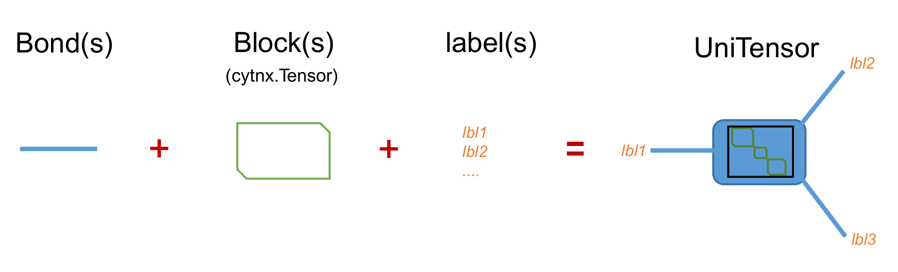
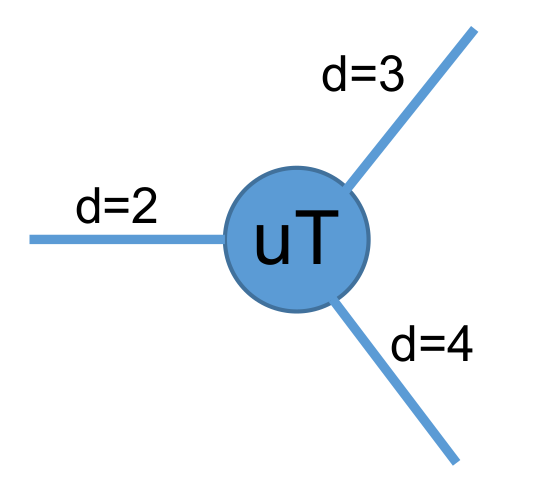
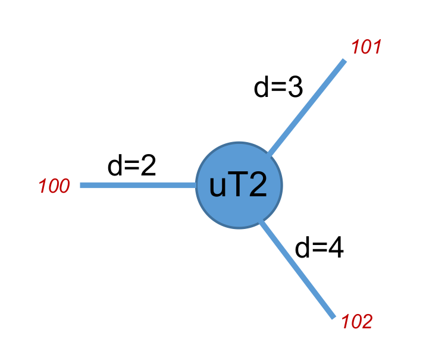

8.3.1. Create UniTensor¶
As mentioned in the intro, a UniTensor = Block(s) + Bond(s) + Label(s). For which Block(s) are the place holder for data, while Bond(s) and Label(s) are the meta data that describe the properties of the UniTensor.
{kind=link}
Generally, there are two types of UniTensor: un-tagged and tagged UniTensor, depending on whether the bond has direction. In a more advanced application, the underlying UniTensor may have block diagonalize or other more complicated structure when Symmetries are invoved, in that case, the UniTensor can further categorized into non-symmetry and with symmetry (block form), which we summarized by the table in the following.
non-sym |
with Symmetry(block-diagonalize) |
|
tagged |
O |
[developing] |
untagged |
O |
[developing] |
Currently the UniTensor with symmetry is under developing.
In the following, we will introduce how to construct a UniTensor.
8.3.1.1. Construct from Tensor¶
Before going into more complicated UniTensor structure, first of all let’s start with the most simple example, for which we convert a Tensor into a UniTensor, and use this to introduce the first type of UniTensor we encounter: untagged UniTensor.
In the following, let’s use a simple rank-3 tensor as example to give you a glance on some basic properties of UniTensor. The tensor notation (diagram) looks like:
{kind=link}
1import cytnx as cy
2
3# create a rank-3 tensor with shape [2,3,4]
4T = cy.arange(2*3*4).reshape(2,3,4)
5
6# convert to UniTensor:
7uT = cy.UniTensor(T)
Here, we simply convert a Tensor T into a UniTensor uT simply by wrapping it with constructor cy.UniTensor(). Formally, we should think of this as we constructing a UniTensor uT with T being uT’s block (data).
We can use print_diagram() to visualize the UniTensor in a more straightforward way as a diagram:
1uT.print_diagram()
Output >>
tensor Name :
tensor Rank : 3
block_form : false
is_diag : False
on device : cytnx device: CPU
-------------
/ \
0 ____| 2 3 |____ 1
| |
| 4 |____ 2
\ /
-------------
There are a lot of information provided in this output which we will explain in details:
Bonds: They are attach to the left side and/or right side of the center square. Now you might wonder why there are bonds putting on left/right? In cytnx, we use a property called rowrank to determine that. The first rowrank bonds will be put on the left and the rest will be on the right. We will get back to this property later. But right now, let’s just assume it take arbitrary integer 0 < rowrank < rank). The number of bonds indicates the rank of the UniTensor, which also indicates in the second line tensor Rank.
- Ex:
Here, we have three bonds, indicates it’s a rank-3 UniTensor.
Labels&dimensions: The number on the outside of each bond represent the label of that bond, and the numbers indicate the dimension (number of elements) of each bond.
- Ex:
The bond on the left side has dimension=2 and label=0.
The bond on the upper-right has dimension=3 and label=1.
The bond on the lower-right has dimension=4 and label=2.
Note
The order of the bonds are arranged from left to right and up to down. for this example, the bond with label=0 is the first bond (index=0); the bond with label=1 is the seoncd bond (index=1); the bond with label=2 is the 3rd bond (index=2).
tensor name: The name (alias) of the UniTensor. User can give UniTensor a name using UniTensor.set_name()
1uT.set_name("tensor uT")
2print(uT)
Output >>
Tensor name: tensor uT
braket_form : False
is_diag : False
Total elem: 24
type : Double (Float64)
cytnx device: CPU
Shape : (2,3,4)
[[[0.00000e+00 0.00000e+00 0.00000e+00 0.00000e+00 ]
[0.00000e+00 0.00000e+00 0.00000e+00 0.00000e+00 ]
[0.00000e+00 0.00000e+00 0.00000e+00 0.00000e+00 ]]
[[0.00000e+00 0.00000e+00 0.00000e+00 0.00000e+00 ]
[0.00000e+00 0.00000e+00 0.00000e+00 0.00000e+00 ]
[0.00000e+00 0.00000e+00 0.00000e+00 0.00000e+00 ]]]
Tip
You can use UniTensor.name() to get the name property of the UniTensor.
on device: This indicates the data of current UniTensor is on which device (cpu or gpu).
Note
The dtype and device of a UniTensor depends on the underlying block (data) of the UniTensor.
Tip
Similar to cytnx.Tensor, one can use .to() to move a UniTensor between devices!
8.3.1.2. From scratch¶
Next, let’s introduce the complete API for construct a UniTensor:
- UniTensor(bonds, labels, rowrank, dtype, device, is_diag)¶
- Parameters:
bonds (List[cytnx.Bond]) – The list of bonds
labels (List[int]) – The list of labels associate to each bond
rowrank (int) – the rowrank when flatten into matrix.
dtype (cytnx.Type) – the dtype of the block(s).
device (cytnx.Device) – the device where the block(s) are hold.
is_diag (bool) – whether the UniTensor is diagonal.
The first argument bonds is a list of bond object, which is similar to the shape of cytnx.Tensor where the elements in shape indicates the dimension of the rank. Here, each rank is represent by a cytnx.Bond object. In general, cytnx.Bond contains three things:
The dimension of the bond.
The direction of the bond (it can be bondType.REG–undirectional, bondType.Ket–inward, bondType.Bra–outward)
The symmetry and the associate quantum numbers.
For more details, see Bond section. Here, for simplicity, we will use only the dimension property of a Bond.
Now let’s construct the rank-3 UniTensor with the same shape as the above example, and assign those three bonds with labels (100,101,102) and also set name to be “uT2”
{kind=link}
1import cytnx as cy
2from cytnx import Bond as bd
3
4uT2 = cy.UniTensor([bd(2),bd(3),bd(4)],labels=[100,101,102],rowrank=1).set_name("uT2 scratch")
5uT2.print_diagram()
6print(uT2)
Output >>
-----------------------
tensor Name : uT2 scratch
tensor Rank : 3
block_form : false
is_diag : False
on device : cytnx device: CPU
-------------
/ \
100 ____| 2 3 |____ 101
| |
| 4 |____ 102
\ /
-------------
Tensor name: uT2 scratch
braket_form : False
is_diag : False
Total elem: 24
type : Double (Float64)
cytnx device: CPU
Shape : (2,3,4)
[[[0.00000e+00 0.00000e+00 0.00000e+00 0.00000e+00 ]
[0.00000e+00 0.00000e+00 0.00000e+00 0.00000e+00 ]
[0.00000e+00 0.00000e+00 0.00000e+00 0.00000e+00 ]]
[[0.00000e+00 0.00000e+00 0.00000e+00 0.00000e+00 ]
[0.00000e+00 0.00000e+00 0.00000e+00 0.00000e+00 ]
[0.00000e+00 0.00000e+00 0.00000e+00 0.00000e+00 ]]]
Note
The UniTensor will have all the elements in the block initialize to zero.
8.3.1.3. Change labels¶
To change the labels associate to bond(s), we can use UniTensor.set_label(index, new_label) or UniTensor.set_labels(new_labels). Note that the label should be integer, and cannot have duplicate labels within a same UniTensor:
1uT.set_label(1,-9)
2uT.print_diagram()
3
4
5uT.set_labels([-8,-10,-999])
6uT.print_diagram()
Output >>
tensor Name : tensor uT
tensor Rank : 3
block_form : false
is_diag : False
on device : cytnx device: CPU
-------------
/ \
0 ____| 2 3 |____ -9
| |
| 4 |____ 2
\ /
-------------
tensor Name : tensor uT
tensor Rank : 3
block_form : false
is_diag : False
on device : cytnx device: CPU
-------------
/ \
-8 ____| 2 3 |____ -10
| |
| 4 |____ -999
\ /
-------------